骨海漂流体 bone
实际显示大小：40px 高
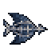
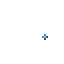
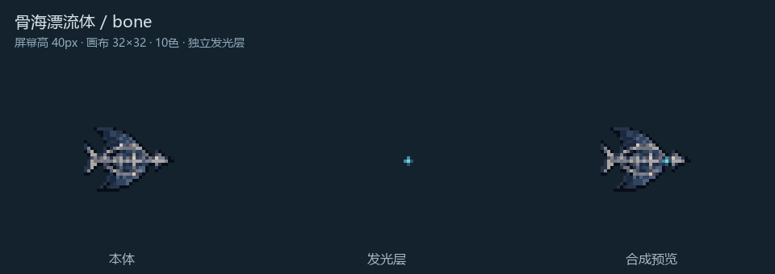
壳海狂奔者 runner
实际显示大小：38px 高
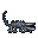
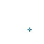
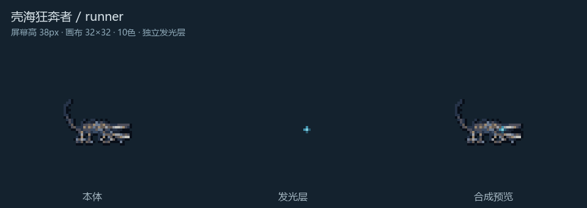
注亡拟嗣 brood
实际显示大小：36px 高
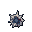
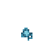
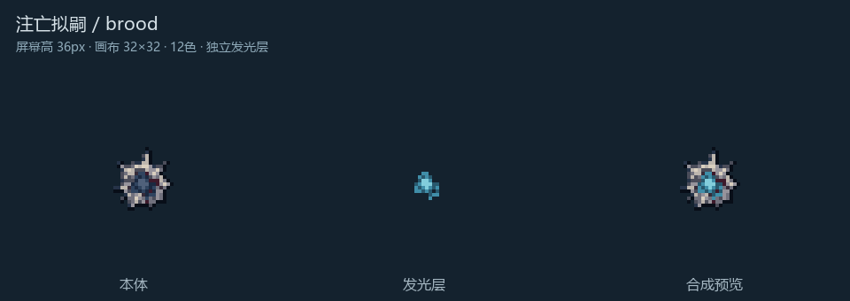
底海滑动者 slider
实际显示大小：46px 高
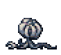
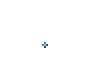
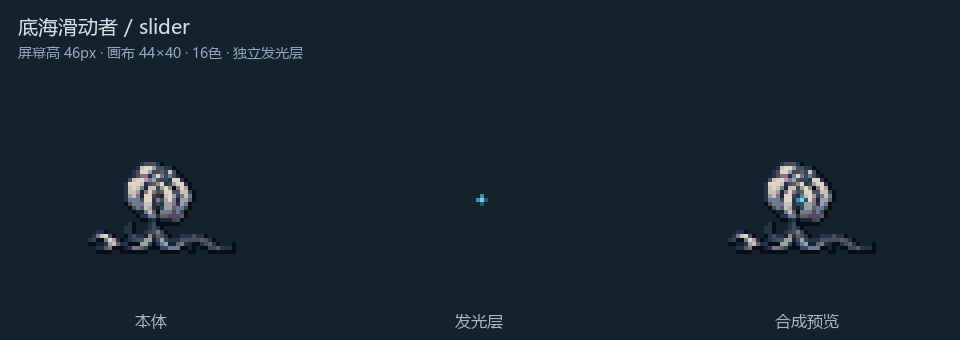
固海凿石者 stone
实际显示大小：50px 高
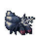
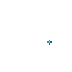
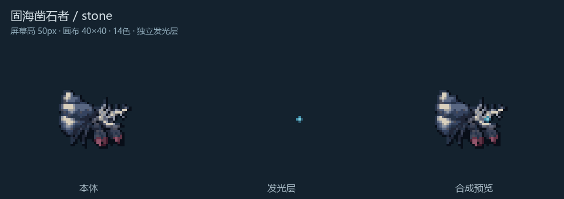
脊海喷吐者 spitter
实际显示大小：50px 高
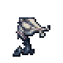
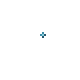
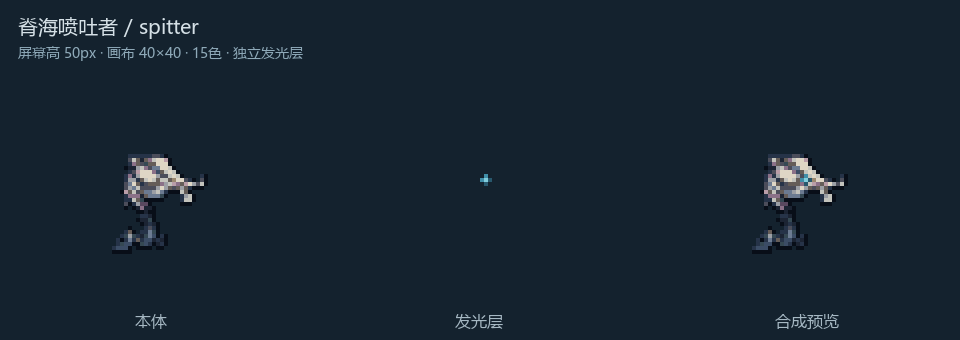
浮海飘航者 floater
实际显示大小：48px 高
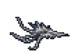
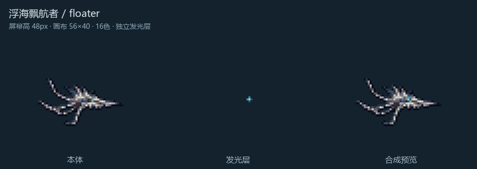
伊祖米克的子代 offspring
实际显示大小：46px 高
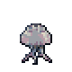
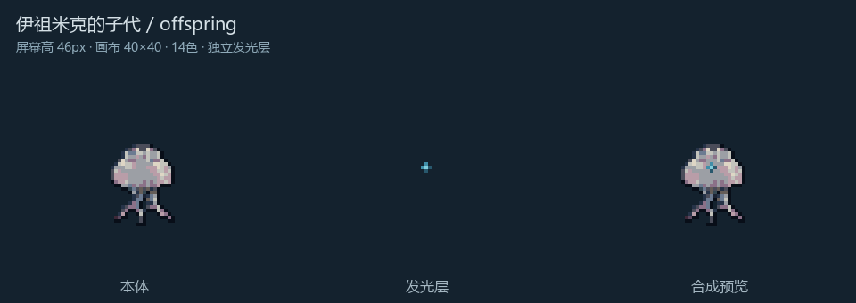
钵海收割者 reaper
实际显示大小：60px 高
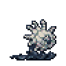
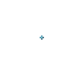
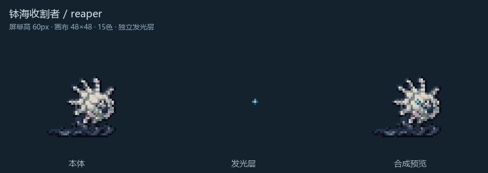
深溟奠基者 founder
实际显示大小：64px 高
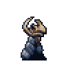
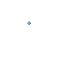
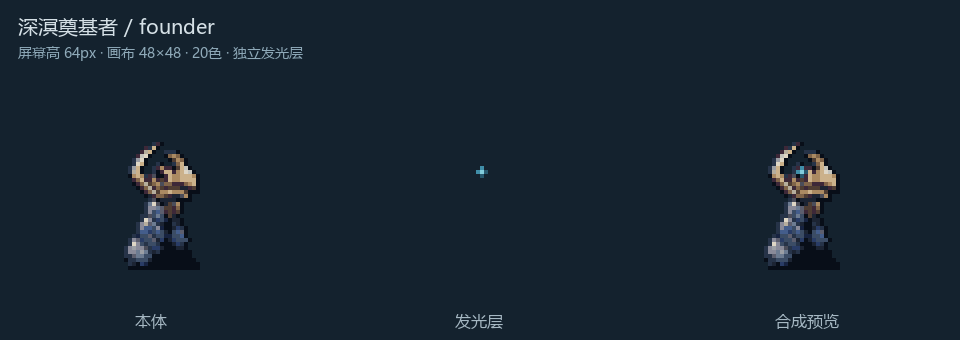
深溟引痕者 tracer
实际显示大小：64px 高
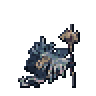
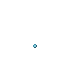
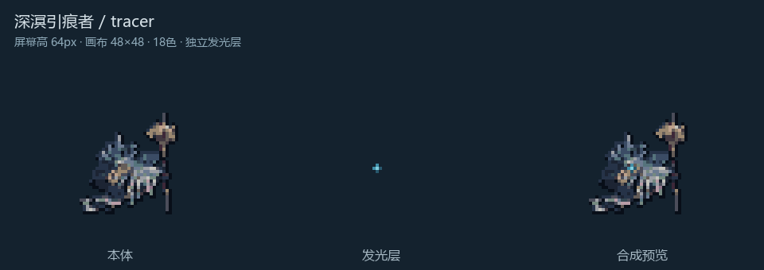
深溟巢涌者 nest
实际显示大小：62px 高
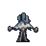
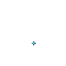
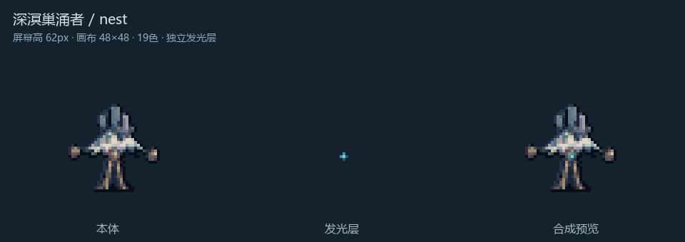
塑路者分形 fractal
实际显示大小：36px 高
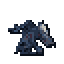
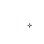
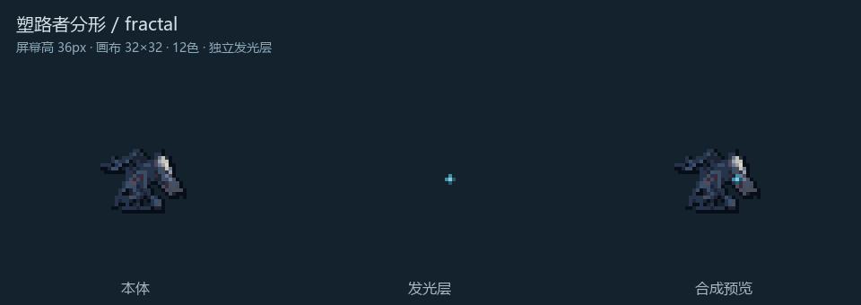
伊莎玛拉之泪 tear
实际显示大小：32px 高
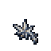
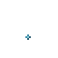
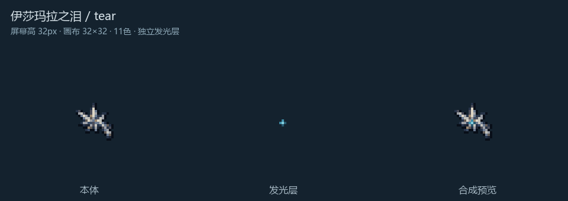
囊海爬行者 pocket
实际显示大小：72px 高
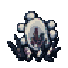
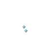
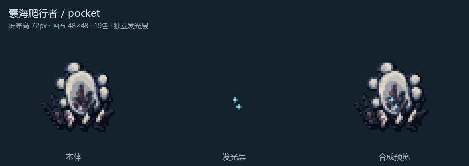
掠海漂移体 skimmer
实际显示大小：60px 高
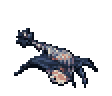
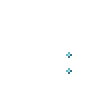
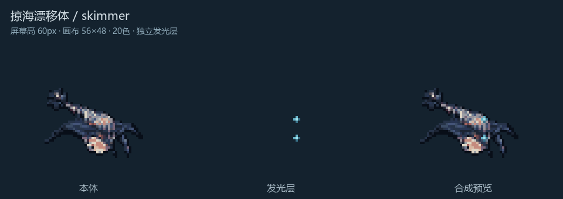
投嗣育母 mother
实际显示大小：92px 高
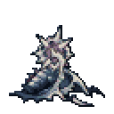
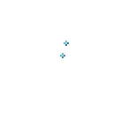
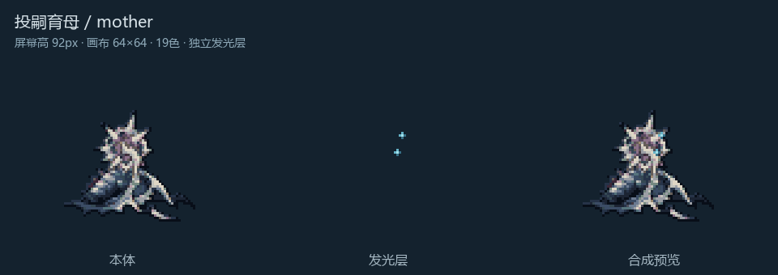
箱形恐鱼 mimic_disguised
实际显示大小：22px 高
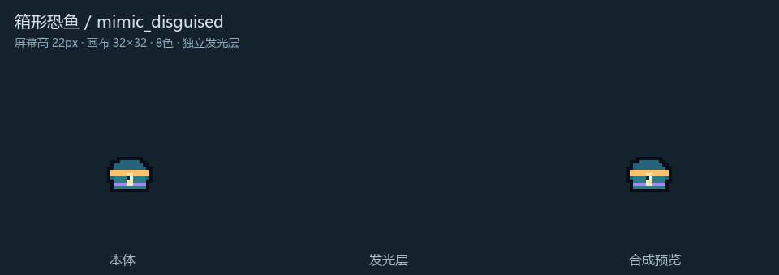
箱形恐鱼 mimic
实际显示大小：48px 高
最后的骑士 knight
实际显示大小：128px 高
圣徒伊比利亚 iberia
实际显示大小：80px 高

圣徒卡门 carmen
实际显示大小：80px 高
接潮主教 bishop
实际显示大小：80px 高
接潮蔑死体 archon
实际显示大小：96px 高
接潮斥亡体 immortal
实际显示大小：96px 高
伊莎玛拉，腐化之心 ishar
实际显示大小：96px 高
最后的骑士 knight_boss
实际显示大小：144px 高
塑路者 path
实际显示大小：128px 高
伊祖米克，生态泉源 izumik
实际显示大小：168px 高
"偏执泡影" paranoia
实际显示大小：160px 高
"偏执泡影" paranoia_phase2
实际显示大小：144px 高
伊莎玛拉，腐化之心 ishar_phase2
实际显示大小：176px 高